crosspred.RdThe function generates predictions from distributed lag linear (DLMs) and non-linear models (DLNMs). These are interpreted as estimated associations defined on a grid of values of the original predictor and lags, computed versus a reference predictor value. This function can be used more generally to generate predictions and facilitate interpretation for uni-dimensional unlagged models.
crosspred(basis, model=NULL, coef=NULL, vcov=NULL, model.link=NULL, at=NULL,
from=NULL, to=NULL, by=NULL, lag, bylag=1, cen=NULL, ci.level=0.95,
cumul=FALSE)
# S3 method for class 'crosspred'
summary(object, ...)usually an object of class "crossbasis" or "onebasis". Alternatively a character string for penalized models. See Details below.
a model object for which the prediction is desired. See Details below.
user-provided coefficients, (co)variance matrix and model link for the prediction. See Details below.
either a numeric vector representing the values of a constant exposure throughout the lag period defined by lag, or a matrix of exposure histories over the same lag period used for estimation.
range of predictor values used for prediction.
either an integer scalar or vector of length 2, defining the lag range used for prediction. Defalut to values used for estimation.
increment of the sequences of predictor and lag values used for prediction.
logical or a numeric scalar. It specifies the centering value, then used as a reference for predictions. See Details below.
confidence level for the computation of confidence intervals.
logical. If TRUE, incremental cumulative associations along (integer) lags are also predicted. See Details.
an object of class "crosspred".
additional arguments to be passed to summary.
model is the model object including basis in its formula. basis is usually an object representing the cross-basis or basis matrix included in model, preserving its attributes and class. Alternatively, for penalized models fitted with gam, basis can be a character string identifying the first argument of s in the model formula (see the cb smooth constructor). Examples are provided below in the related section.
The function computes predictions for specific combinations of predictor and lag values, and the net overall predictions accounting for the whole lag period. By default, predictor values are set internally as approximately 50 equally-spaced points within the range, or alternatively directly defined through at or from/to/by. Lag values are are set by default at all the integer values within the lag period, or determined by lag and bylag.
The values in at can be provided as a vector, and in this case they are replicated for each lag. As an alternative usage, at can be provided as a matrix of complete exposure histories over the same lag period used for estimation, in order to compute the association with a specific exposure pattern (see also exphist).
Predictions are computed versus a reference value, with default values dependent on the function used in basis, or manually set through cen. Briefly, sensible default values are automatically defined for strata, thr and integer (corresponding to the reference region), and for lin (corresponding to 0). For other choices, such as ns, bs, poly or other existing or user-defined functions, the centering value is set by default to the mid-range. The inclusion of the intercept in basis term nullifies the centering.
Exponentiated predictions are included if model.link is equal to "log" or "logit". Confidence intervals computed using a normal approximation and a confidence level of ci.level. model.link is automatically selected from model for some classes when set to NULL (default), but needs to be provided for different classes. Matrices with incremental cumulative predicted associations along integer lags at each exposure values used for prediction are included if cumul=TRUE.
The function automatically works with model objects from regression function lm and glm, gam (package mgcv), coxph and clogit (package survival), lme and nlme (package nlme), lmer and glmer and nlmer (package lme4), gee (package gee), geeglm (package geepack). The function also works with any regression function for which coef and vcov methods are available. Otherwise, the user needs to input the coefficients and associated (co)variance matrix related to the parameters of the crossbasis as arguments coef and vcov, and information on the link function in model.link. In this case, dimensions and order must match the variables included in basis.
The function can be used to compute predictions for models with simple uni-dimensional basis functions not including lag, derived either with onebasis or with smooth penalized functions in gam. In this case, only unlagged predicted associations are returned.
A list object of class "crosspred" with the following (optional) components:
vector or matrix of values used for prediction, depending on the format of the argument at (see Details above).
(optional) numeric scalar defining the centering value.
integer vector defining the lag range used for prediction.
increment of the sequence of lag values.
coefficients and their variance-covariance matrix.
matrices of predictions and standard errors at the chosen combinations of predictor and lag values.
matrices of confidence intervals for matfit.
vectors of the overall cumulative predicted association and standard errors.
vectors of confidence intervals for allfit.
matrices of incremental cumulative predicted associations along lags and related standard errors at the chosen combinations of predictor and (integer) lag values. Computed if cumul=TRUE.
matrices of confidence intervals for cumfit. Computed if cumul=TRUE.
matrix of exponentiated specific associations from matfit.
matrices of confidence intervals for matRRfit.
vector of exponentiated overall cumulative associations from allfit.
vectors of confidence intervals for allRRfit.
matrix of exponentiated incremental cumulative associations from cumfit. Computed if cumul=TRUE.
matrix of confidence intervals for . Computed if cumul=TRUE.
confidence level used for the computation of confidence intervals for cumRRfit.
class of the model command used for estimation.
a specification for the model link function.
The function summary.crosspred returns a summary of the list.
Gasparrini A. Distributed lag linear and non-linear models in R: the package dlnm. Journal of Statistical Software. 2011;43(8):1-20. [freely available here].
Gasparrini A, Scheipl F, Armstrong B, Kenward MG. A penalized framework for distributed lag non-linear models. Biometrics. 2017;73(3):938-948. [freely available here]
Gasparrini A. Modeling exposure-lag-response associations with distributed lag non-linear models. Statistics in Medicine. 2014;33(5):881-899. [freely available here]
Gasparrini A., Armstrong, B.,Kenward M. G. Distributed lag non-linear models. Statistics in Medicine. 2010;29(21):2224-2234. [freely available here]
All the predictions are generated using a reference value, which if not directly specific by cen is given default values corresponding to (approximately) the mid-range point for continuous functions. Before version 2.2.0 of dlnm, centering was produced in onebasis or crossbasis (see the related help pages), and for backward compatibility this information is kept (with a warning) and used in crosspred unless cen is directly defined as an argument.
Exponentiated predictions are included if model.link (selected by the user or specified automatically by model) is equal to "log" or "logit".
In case of collinear variables in the basis object, some of them are discarded and the related parameters not included in model. Then, crosspred will return an error. Check that the specification of the variables is meaningful through summary.crossbasis or summary.onebasis.
The name of the object basis will be used to extract the related estimated parameters from model. If more than one variable is transformed by cross-basis functions in the same model, completely different names must be specified (excluding also partial matching such as abbreviations).
onebasis to generate one-dimensional basis matrices. crossbasis to generate cross-basis matrices. crossreduce to reduce the fit to one dimension.
The method function plot to plot several type of graphs.
See dlnm-package for an introduction to the package and for links to package vignettes providing more detailed information.
### example of application in time series analysis - see vignette("dlnmTS")
# seasonal analysis: select summer months only
chicagoNMMAPSseas <- subset(chicagoNMMAPS, month>5 & month<10)
# create the crossbasis objects, including info on groups
cb2.o3 <- crossbasis(chicagoNMMAPSseas$o3, lag=5,
argvar=list(fun="thr",thr=40.3), arglag=list(fun="integer"),
group=chicagoNMMAPSseas$year)
cb2.temp <- crossbasis(chicagoNMMAPSseas$temp, lag=10,
argvar=list(fun="thr",thr=c(15,25)), arglag=list(fun="strata",breaks=c(2,6)),
group=chicagoNMMAPSseas$year)
summary(cb2.o3)
#> CROSSBASIS FUNCTIONS
#> observations: 1708
#> groups: 14
#> range: 4.080899 to 65.80827
#> lag period: 0 5
#> total df: 6
#>
#> BASIS FOR VAR:
#> fun: thr
#> thr.value: 40.3
#> side: h
#> intercept: FALSE
#>
#> BASIS FOR LAG:
#> fun: integer
#> values: 0 1 2 3 4 5
#> intercept: TRUE
#>
summary(cb2.temp)
#> CROSSBASIS FUNCTIONS
#> observations: 1708
#> groups: 14
#> range: 6.666667 to 33.33333
#> lag period: 0 10
#> total df: 6
#>
#> BASIS FOR VAR:
#> fun: thr
#> thr.value: 15 25
#> side: d
#> intercept: FALSE
#>
#> BASIS FOR LAG:
#> fun: strata
#> df: 3
#> breaks: 2 6
#> ref: 1
#> intercept: TRUE
#>
# run the model
library(splines)
model2 <- glm(death ~ cb2.o3 + cb2.temp + ns(doy, 4) + ns(time,3) + dow,
family=quasipoisson(), chicagoNMMAPSseas)
# get the predictions for o3 at specific exposure values
pred2.o3 <- crosspred(cb2.o3, model2, at=c(0:65,40.3,50.3))
# get figures for the overall cumulative association, with ci
pred2.o3$allRRfit["50.3"]
#> 50.3
#> 1.047313
cbind(pred2.o3$allRRlow, pred2.o3$allRRhigh)["50.3",]
#> [1] 1.004775 1.091652
# plot the estimated lag-response curve (with 80%CI)
plot(pred2.o3, "slices", var=50.3, ci="bars", type="p", col=2, pch=19,
ci.level=0.80, main="Lag-response a 10-unit increase above threshold (80CI)")
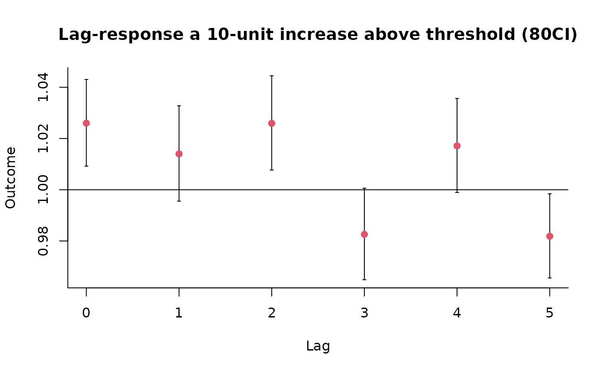
# plot the estimated overall cumulative exposure-response curve
plot(pred2.o3,"overall",xlab="Ozone", ci="l", col=3, ylim=c(0.9,1.3), lwd=2,
ci.arg=list(col=1,lty=3), main="Overall cumulative association for 5 lags")
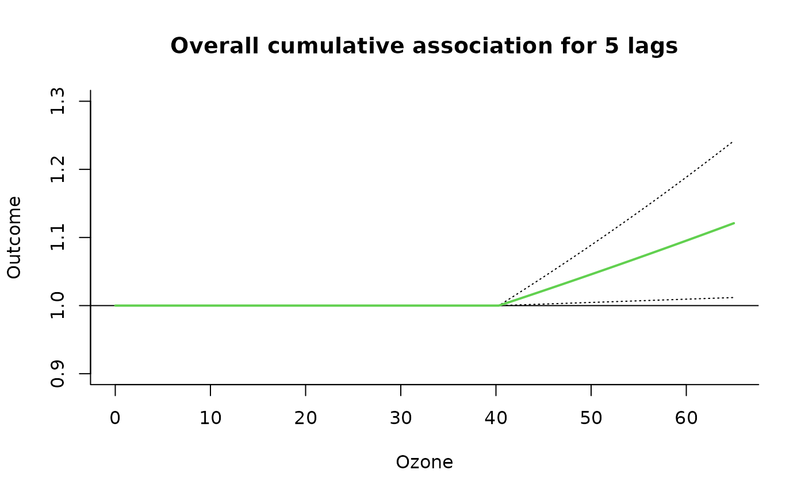
# plot the estimated exposure-lag-response surface
plot(pred2.o3, xlab="Ozone", main="3D: default perspective")
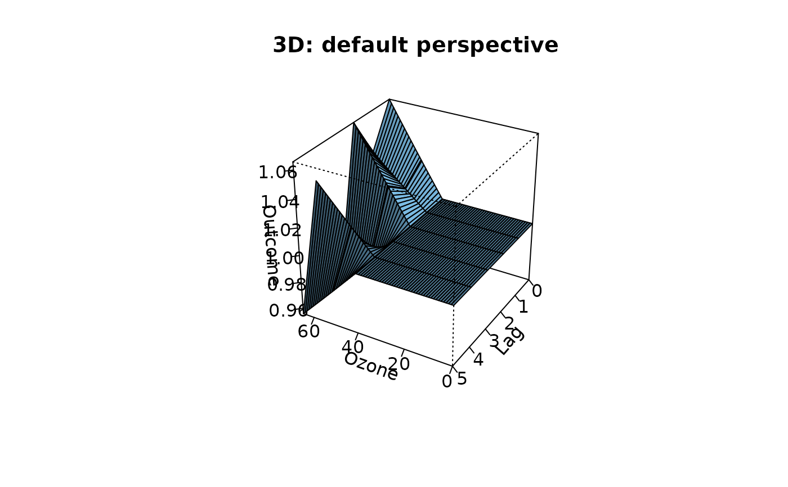
plot(pred2.o3, xlab="Ozone", main="3D: different perspective", theta=250, phi=40)
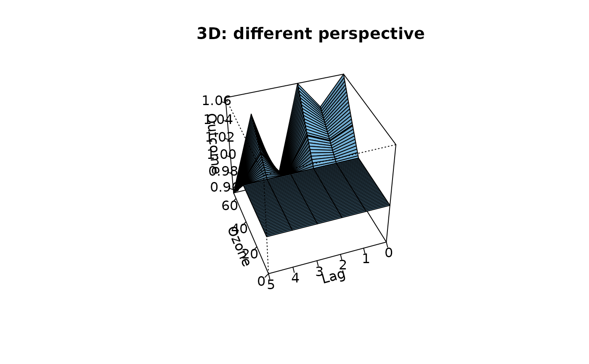
### example of application beyond time series - see vignette("dlnmExtended")
# generate the matrix of exposure histories from the weekly data
Qdrug <- as.matrix(drug[,rep(7:4, each=7)])
colnames(Qdrug) <- paste("lag", 0:27, sep="")
# define the cross-basis
cbdrug <- crossbasis(Qdrug, lag=27, argvar=list("lin"),
arglag=list(fun="ns",knots=c(9,18)))
# run the model, predict, and show estimates for specific values
mdrug <- lm(out~cbdrug+sex, drug)
pdrug <- crosspred(cbdrug, mdrug, at=0:20*5)
with(pdrug,cbind(allfit,alllow,allhigh)["50",])
#> allfit alllow allhigh
#> 30.29584 20.12871 40.46298
pdrug$matfit["20","lag3"]
#> [1] 1.118139
# bi-dimensional exposure-lag-response association
plot(pdrug, zlab="Effect", xlab="Dose", ylab="Lag (days)")
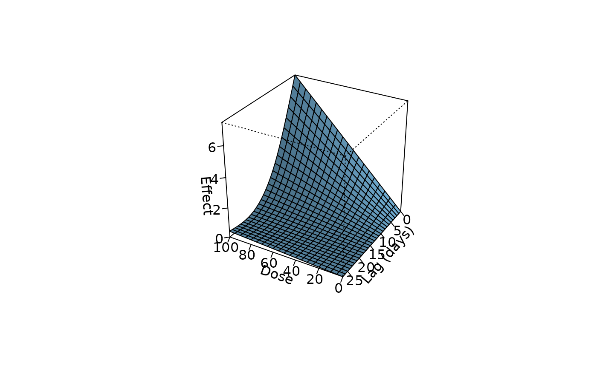
plot(pdrug, var=60, ylab="Effect at dose 60", xlab="Lag (days)", ylim=c(-1,5))
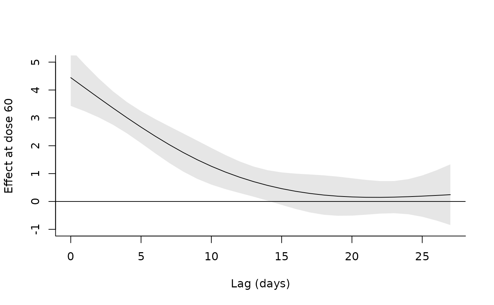
plot(pdrug, lag=10, ylab="Effect at lag 10", xlab="Dose", ylim=c(-1,5))
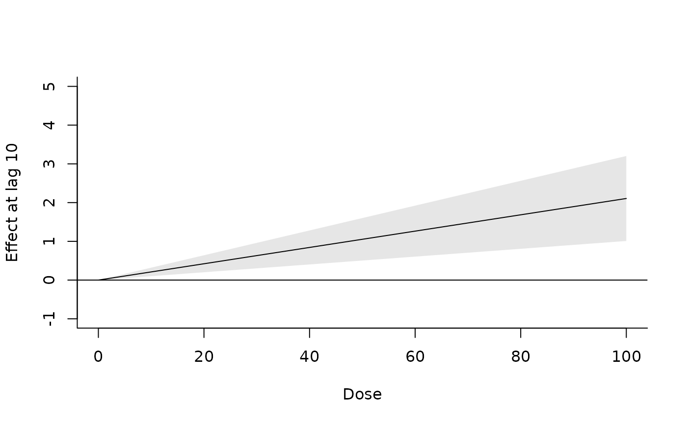
### example of extended predictions - see vignette("dlnmExtended")
# dose 20 for 10 days
histdrug <- exphist(rep(20,10), time=10, lag=27)
pdrug4 <- crosspred(cbdrug, mdrug, at=histdrug)
with(pdrug4,c(allfit,alllow,allhigh))
#> 10 10 10
#> 9.633688 7.829238 11.438138
# define exposure profile with weekly exposures to 10, 50, 0 and 20
expdrug <- rep(c(10,50,0,20),c(2,1,1,2)*7)
# define the exposure histories for all the time points
dynhist <- exphist(expdrug, lag=27)
# predict the effects
pdyndrug <- crosspred(cbdrug, mdrug, at=dynhist)
# plot of the evolution of the effects along time given the doses
plot(pdyndrug,"overall", ylab="Effect", xlab="Time (days)", ylim=c(-5,27),
xlim=c(1,50))
### example of user-defined functions - see vignette("dlnmExtended")
# define the decay function
fdecay <- function(x, scale=5, ...) {
basis <- exp(-x/scale)
attributes(basis)$scale <- scale
return(basis)
}
# define the cross-basis
cbdrug2 <- crossbasis(Qdrug, lag=27, argvar=list("lin"),
arglag=list(fun="fdecay",scale=6))
#> Error in get(fun, mode = "function", envir = envir): object 'fdecay' of mode 'function' was not found
summary(cbdrug2)
#> Error: object 'cbdrug2' not found
# run the model and predict
mdrug2 <- lm(out~cbdrug2+sex, drug)
#> Error in eval(predvars, data, env): object 'cbdrug2' not found
pdrug2 <- crosspred(cbdrug2, mdrug2, at=0:20*5)
#> Error: object 'cbdrug2' not found
# plot and compare with previous fit
plot(pdrug2, zlab="Effect", xlab="Dose", ylab="Lag (days)")
#> Error: object 'pdrug2' not found
plot(pdrug2, var=60, ylab="Effect at dose 60", xlab="Lag (days)", ylim=c(-1,5))
#> Error: object 'pdrug2' not found
lines(pdrug, var=60, lty=2)
plot(pdrug2, lag=10, ylab="Effect at lag 10", xlab="Dose", ylim=c(-1,5))
#> Error: object 'pdrug2' not found
lines(pdrug, lag=10, lty=2)
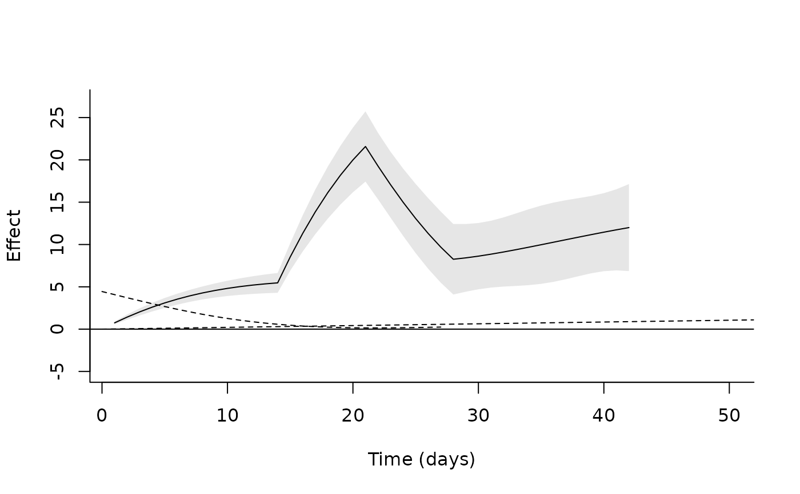
### example of general use for regression models - see vignette("dlnmExtended")
# replicate example illustrated in help(ns)
library(splines)
oneheight <- onebasis(women$height, "ns", df=5)
mwomen <- lm(weight ~ oneheight, data=women)
pwomen <- crosspred(oneheight, mwomen, cen=65, at=58:72)
with(pwomen, cbind(allfit, alllow, allhigh)["70",])
#> allfit alllow allhigh
#> 18.92287 18.46545 19.38030
plot(pwomen, ci="l", ylab="Weight (lb) difference", xlab="Height (in)", col=4)
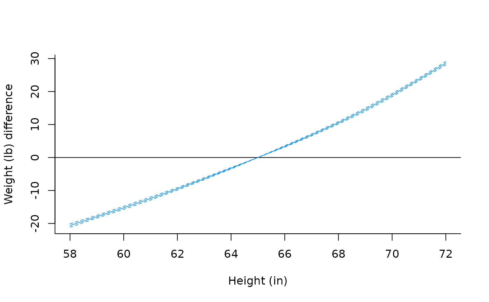
# replicate example illustrated in help(gam)
library(mgcv)
#> Loading required package: nlme
#> This is mgcv 1.9-3. For overview type 'help("mgcv-package")'.
dat <- gamSim(1,n=200,dist="poisson",scale=.1)
#> Gu & Wahba 4 term additive model
b2 <- gam(y ~ s(x0,bs="cr") + s(x1,bs="cr") + s(x2,bs="cr") + s(x3,bs="cr"),
family=poisson, data=dat, method="REML")
plot(b2, select=3)
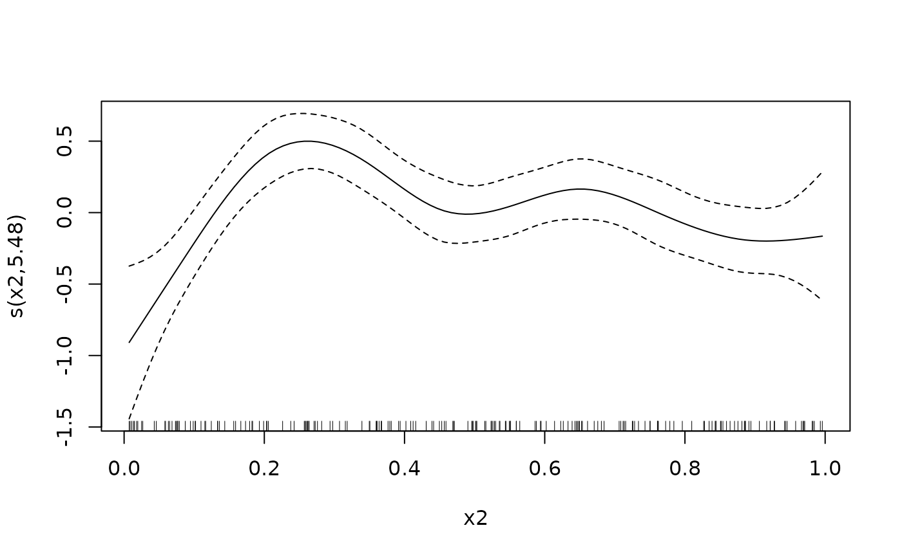
pgam <- crosspred("x2", b2, cen=0, at=0:100/100)
with(pgam, cbind(allRRfit, allRRlow, allRRhigh)["0.7",])
#> allRRfit allRRlow allRRhigh
#> 2.959202 1.566657 5.589529
plot(pgam, ylim=c(0,3), ylab="RR", xlab="x2", col=2)
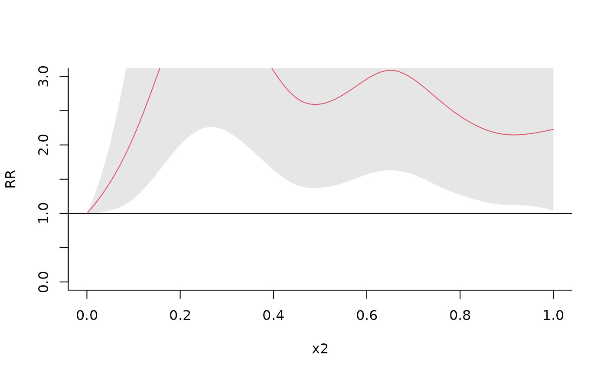
### example of penalized models - see vignette("dlnmPenalized")
# to be added soon